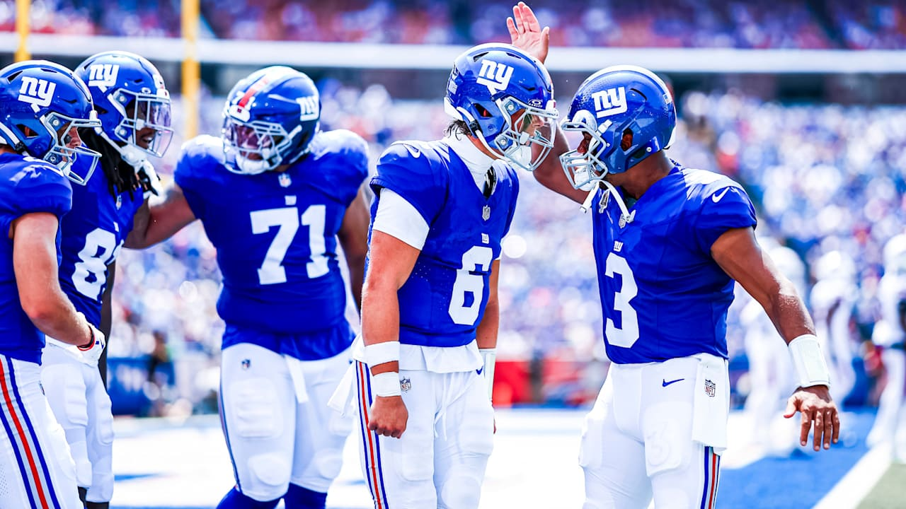
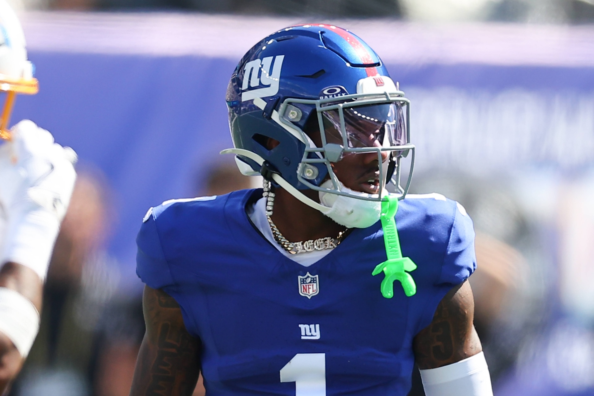
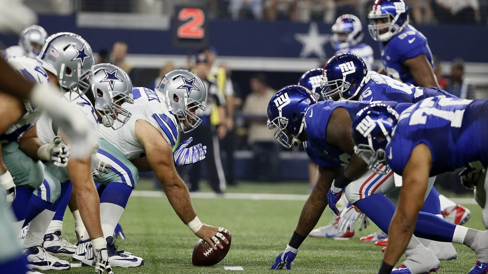
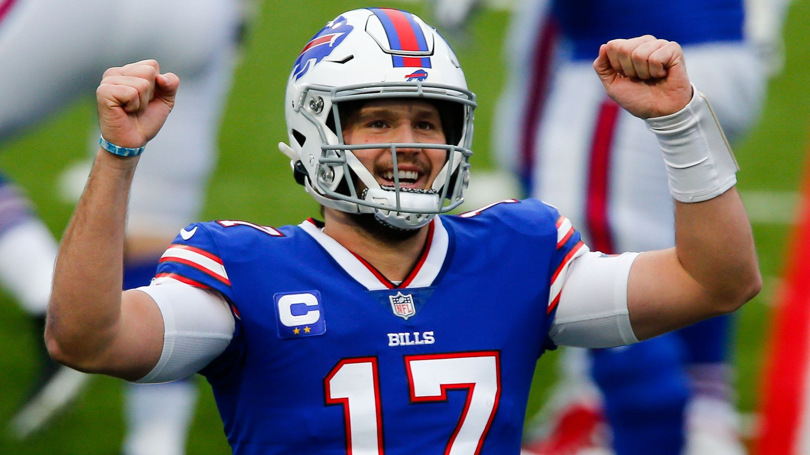

Carlos José Villanueva Ramos
📅 9 agosto 2026
🏈 Filadelfia mantendrá su jugada terrestre insignia con Saquon Barkley al frente
El nuevo coordinador ofensivo de los Eagles, Sean Mannion, confirmó que no abandonará el famoso Tush Push, centrando toda la estrategia en el corredor estrella Saquon Barkley.

Fuente: NFL.com
Carlos José Villanueva Ramos
📅 9 de agosto 2026
Abdul Carter apunta al Jugador Defensivo del Año bajo la mirada de John Harbaugh
El linebacker de segundo año de los Giants, Abdul Carter, se ha fijado la meta de ganar el premio al Jugador Defensivo del Año tras liderar a los novatos con 72 presiones en 2025.

Fuente: NFL.com
Carlos José Villanueva Ramos
📅 29 de agosto 2026
Cierre triunfal en el MetLife Stadium: Los Giants superan a los Jets 23-6 y afianzan sus decisiones clave de plantilla
Panorama general y resultado
Marcador: New York Giants 23 - 6 New York Jets.
Balance de pretemporada: Los Giants concluyen con un registro de 2-1 en la pretemporada bajo la dirección técnica del entrenador principal John Harbaugh.
Aspectos destacados: Tras permitir un touchdown inicial en la primera serie ofensiva de los Jets, la defensa de los Giants cerró la puerta por completo el resto del encuentro.
Ofensivamente, anotaron touchdowns Tyrone Tracy Jr. y Xavier Gipson.
Actuaciones destacadas en la Ofensiva
Mariscales de campo: Jameis Winston abrió como titular (4/9, 64 yardas, 1 INT tras un resbalón/desvío de Odell Beckham Jr.).
Le siguieron Brandon Allen y Jake Haener (quien lanzó el pase de TD de 37 yardas a Xavier Gipson).
Corredores y Receptores:
Najee Harris: Hizo su debut con el equipo sumando 11 acarreos para 39 yardas y una recepción de 20 yardas.
Tyrone Tracy Jr.: Aportó 37 yardas por tierra y 1 TD antes de ser evaluado y dado de alta tras un protocolo de conmoción cerebral.
Odell Beckham Jr.: Tuvo 3 recepciones para 53 yardas en 6 pases dirigidos.
Línea Ofensiva: Aunque se descansó a los tackles titulares Andrew Thomas y Jermaine Eluemunor, los linieros interiores titulares (incluido el novato Sisi Mauigoa) tuvieron rodaje.
El novato JC Davis volvió a iniciar como tackle izquierdo.
Desempeño Defensivo y Equipos Especiales
Defensa: Zaire Barnes logró una intercepción contra su exequipo.
Trace Ford destacó a la defensiva con 5 tacleadas (3 para pérdida), 1 captura y 2 golpes al QB. Khalid Kareem acumuló 1.5 capturas.
Equipos Especiales:
Jordan Stout (Despejador): Tuvo un despeje de 81 yardas (después de que se anulara uno previo de 66 yardas).
Definición del Pateador (Kicker): John Harbaugh confirmó formalmente que el novato no reclutado Dominic Zvada se quedó con la titularidad para la temporada 2026, tras acertar goles de campo de 53, 46 y 23 yardas en este partido (terminando la pretemporada perfecto).
Próximos Pasos (Calendario y Fechas Clave)
Reducción de plantilla (Corte a 53 jugadores): Fecha límite: domingo 30 de agosto a las 6:00 p. m. (Hora del Este).
Lista de transferibles (Waivers): Lunes 31 de agosto a la 1:00 p. m. (Los Giants tienen la quinta prioridad de reclamo).
Inicio de Temporada Regular (Semana 1): Domingo 13 de septiembre en casa contra los Dallas Cowboys (Sunday Night Football).
Comentarios y Notas de Análisis
Definición en la pateaduría: La declaración firme de John Harbaugh otorgándole el puesto de titular a Dominic Zvada resuelve una de las competencias más reñidas del campamento.
El elogio de Harbaugh hacia Ben Sauls deja ver que la competencia fue de muy alto nivel.
Evaluación de la línea ofensiva: El hecho de dar minutos a los jugadores de la línea interior busca construir química antes de enfrentarse a la defensiva de Dallas en la Semana 1.
El duelo de los hermanos Mauigoa (Sisi vs. Kiko) fue un detalle de color relevante durante el juego.
Profundidad a la defensiva: Actuaciones como la de Trace Ford y Zaire Barnes complican de forma positiva las decisiones del cuerpo técnico de cara al corte de plantilla de 53 jugadores del domingo.

Fuente: NFL.com
Carlos José Villanueva Ramos
📅 9 de agosto 2026
El safety Brandon Jones brilla como pateador de emergencia para los Broncos
Situación inesperada: Con el pateador titular Wil Lutz en Canton presenciando la inducción de Drew Brees al Salón de la Fama, los Denver Broncos tuvieron que activar su "Plan B" durante la práctica del sábado. 🏈
El héroe inesperado: El safety de 28 años, Brandon Jones, asumió el rol de pateador y sorprendió a todos al conectar 3 de 4 intentos de gol de campo, incluidos dos seguidos desde la yarda 35.
Pasado futbolero: Jones, quien jugó fútbol en su juventud y bromea con hacer una prueba en la MLS en el futuro, le dio al coordinador de equipos especiales, Darren Rizzi, la tranquilidad de saber que cuentan con un pateador de emergencia confiable.

Fuente: NFL.com
Carlos José Villanueva Ramos
📅 12 de septiembre 2026
Rumbo al Kickoff: Plantilla renovada, el show de Harbaugh y el regreso del gigante Nabers
Créditos de redacción original: Dan Salomone y Matt Citak (Giants.com)
¡La marea azul está lista para sacudir el MetLife Stadium este domingo por la noche frente a los odiados Dallas Cowboys! La gran noticia que nos trae la semana previa al debut es la llegada oficial de la era de John Harbaugh al timón de nuestros Giants.
En su última conferencia antes del partido, el coach lució una gorra del FDNY con un mensaje conmovedor sobre el 25 aniversario del 11-S, recordando a esos héroes que corrieron hacia el humo y transmitiendo esa misma mentalidad valiente y desinteresada a nuestros muchachos para el choque contra Dallas.
¡Eso es tener los colores bien puestos en el corazón de Nueva York!
En el terreno de lesiones, toda la fanaticada ha estado con el Jesús en la boca por nuestro receptor estelar, Malik Nabers.
Después de una molesta lesión de rodilla que frenó su año pasado, el número 1 entrenó con normalidad toda la semana y se mantuvo como dudoso en el reporte final.
Aunque la práctica del viernes fue más ligera y mental, Nabers dejó claro que ha sudado la gota gorda para estar listo: si pisa el césped este domingo, es porque está al cien para dar su show habitual.
Del otro lado, los vaqueros ya sufrieron su primera baja importante al descartar al corredor Malik Davis por molestias en la cadera.
¡Punto para nosotros!
La directiva y el cuerpo técnico tampoco han perdido el tiempo afinando las piezas de nuestra maquinaria.
El coordinador ofensivo Matt Nagy soltó una bomba táctica al anunciar que dirigirá las jugadas desde la cabina de transmisión este año, buscando una perspectiva más calmada y panorámica para guiar a nuestro joven mariscal de campo, Jaxson Dart.
Además, hablemos de movimientos maestros en la gerencia con Joe Schoen: se amarraron extensiones de contrato jugosas por dos años para el veterano mariscal Jameis Winston (que será un suplente de lujo detrás de Dart) y para nuestro muro en la línea ofensiva, Jon Runyan Jr., asegurando contundencia hasta 2028.
Por si fuera poco, la plantilla de 53 elementos y el equipo de práctica se han reforzado con colmillos retorcidos y talento puro.
¡Imagínate ver de vuelta al histórico Odell Beckham Jr. luciendo de nuevo su inolvidable número 13! El veterano WR superó todas las expectativas tras una larga ausencia y está listo para escribir un capítulo legendario más con el jersey de los Giants.
Y para cerrar con broche de oro, el calendario de uniformes nos tiene babeando: ¡tendremos los jerseys clásicos de los años 80 y los hermosos "Vintage White" conmemorado los 40 años de nuestro campeonato de 1986! ¡Pura historia pura corriendo por nuestras venas!

Fuente: NFL.com
Carlos José Villanueva Ramos
📅 12 de septiembre 2026
Las 10 claves imperdibles para el debut de fuego Giants vs. Cowboys
Créditos de redacción original: Matt Citak (Editora jefe de Giants.com)
Si pensabas que el partido de este domingo era solo un juego más del calendario, te equivocas, hermano azul.
Este enfrentamiento frente a los vaqueros marca el inicio de la era John Harbaugh en East Rutherford y la rivalidad número 128 en temporada regular entre estas dos franquicias históricas.
Los números de Harbaugh en partidos inaugurales durante sus 18 años con los Ravens imponen respeto (12-6), y ahora buscamos que esa mística ganadora se mude de inmediato a la NFC Este.
¡El MetLife Stadium va a rugir como nunca en horario estelar!
La gran lupa de la noche estará sobre la evolución de nuestro quarterback de segundo año, Jaxson Dart.
Tras cerrar su temporada de novato con actuaciones memorables —incluyendo una exhibición brillante contra los mismos Cowboys en la Semana 18 del año pasado—, Dart asegura sentirse con la mente totalmente clara y listo para devorarse el emparrillado.
Con 24 touchdowns totales en su temporada de estreno, el chico de 1,88 metros tiene la mesa servida para consagrarse desde el silbatazo inicial.
Otro de los espectáculos visuales y defensivos que nos va a volar la cabeza es el debut de nuestra nueva muralla de apoyadores.
¡Prepárense para temblar, ofensivas rivales! La llegada del veterano Tremaine Edmunds (1,93 m y 114 kg) combinada con la selección de primera línea del novato Arvell Reese le inyecta una brutalidad atlética sin precedentes al centro del campo de los Giants.
Junto a Micah McFadden, esta dupla promete cerrar los huecos por tierra y ahogar a Dak Prescott en la cobertura zonal.
¡Adiós a las tacleadas fallidas del pasado!
Por supuesto, no podemos ignorar las amenazas del rival de Texas.
Los vaqueros llegan armados hasta los dientes con Dak Prescott comandando los controles, CeeDee Lamb y George Pickens haciendo estragos por aire, y una línea defensiva reforzada con pesos pesados como Quinnen Williams y Kenny Clark, además de la peligrosa presencia del novato defensivo Caleb Downs.
Sin embargo, nuestros muchachos tienen con qué responder y romper las estadísticas: nuestro tackle Andrew Thomas registró la tasa de presión rápida más baja de la liga, y nuestro terror absoluto en la defensiva exterior, Abdul Carter, viene de liderar la NFL con 45 presiones rápidas en su temporada de novato.
La mesa está servida, las gargantas están listas para gritar cada jugada y la transmisión oficial nos pondrá los pelos de punta ya sea por NBC con Mike Tirico y Cris Collinsworth, o sintonizando nuestra gloriosa estación de radio WFAN 101.9FM con la narración de leyendas como Bob Papa y Carl Banks.
¡Que empiece de una vez por todas esta locura llamada temporada 2026!

Fuente: NFL.com
Carlos José Villanueva Ramos
📅 18 de septiembre 2026
🏈 3. Josh Allen y los Bills arrollan a los Lions en la fiesta de inauguración
Inaugurar un estadio nuevo trae una presión tremenda, pero para Josh Allen y los Buffalo Bills, el estreno del Highmark Stadium fue una auténtica fiesta ofensiva.
Con una actuación memorable, los Bills vencieron 41-31 a unos exhaustos Detroit Lions en el Thursday Night Football.
Allen fue el maestro de ceremonias absoluto, brillando tanto por aire como por tierra.
En la primera mitad ya acumulaba cuatro touchdowns en total, guiando a su equipo a una cómoda ventaja de 27-7 al medio tiempo y consolidando su candidatura temprana a la pelea por el Super Bowl.
El artículo desglosa varios puntos clave de este choque:
Dominio total de Allen: Acumuló 248 yardas por aire con tres touchdowns y sumó otros dos por tierra con 69 yardas acarreadas, uniéndose a la historia de la NFL.
El peso del calendario para Detroit: Apenas cuatro días después de jugar en tiempo extra, los Lions sufrieron una paliza tempranera, evidenciando el desgaste físico.
El despertar defensivo de Buffalo: A pesar de permitir puntos al final, figuras como Gregory Rousseau brillaron con múltiples capturas y presiones al mariscal rival.
Un arranque histórico: Con este triunfo, Joe Brady se convirtió en el primer entrenador en jefe en la historia de los Bills en iniciar su carrera con un récord de 2-0.
El partido demostró que cuando Buffalo enciende sus motores desde el inicio, frenarlos es una misión casi imposible para cualquier rival.

Fuente: Grant Gordon, NFL.com